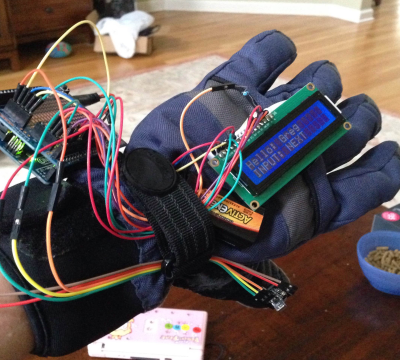

I am working oin many projects with the arduino. Currently, my favorite project I have done is the LCD Glove:
I used a IR Reciever, 16*2 LCD monitor, mini breadboard, and Arduino UNO board.

This project took around a weekend to develop. At first, I had problems making sure that the wires were intact. Later on however, I figured out how to hand the glove so this would not occur. If you look at the picture, you will see a resistor connected to the LCD backlight. I used the 10k resistor instead of a potentiometer.